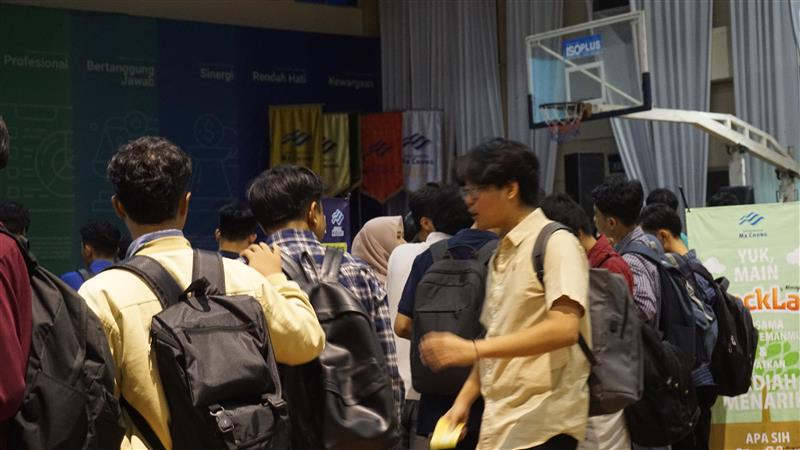

Program Kerja
BPMU
Mahasiswa Universitas (BPMU) untuk mewadahi promosi kegiatan ekstrakurikuler mahasiswa Universitas Ma Chung. Kegiatan ekstrakurikuler yang diwadahi oleh Unit Kegiatan Mahasiswa (UKM) dan Klub di lingkungan universitas memiliki peran penting dalam membantu mahasiswa untuk mengembangkan potensi mereka. Kegiatan Festea ini melibatkan seluruh UKM dan Klub yang ada di Universitas Ma Chung dalam mempromosikan UKM dan Klub nya masing-masing. Kegiatan ini bertujuan untuk memberi wadah kepada mahasiswa untuk menjadi anggota serta mengembangkan kualitas SDM

bertujuan untuk memfasilitasi pergantian ketua BPMU dari kepengurusan lama ke kepengurusan baru untuk mewujudkan regenerasi yang berkesinambungan sekaligus menjadi wadah demokratis dalam berorganisasi. Untuk membentuk sistem regenerasi yang transparan dan adil, maka penyelenggaraan regenerasi perlu dilakukan secara seksama dan terkoordinasi. Tujuan utama dari program kerja ini adalah untuk menyeleksi calon ketua hingga dipilih ketua baru untuk periode selanjutnya sehingga dapat memiliki kepengurusan yang berintegritas dan berdaulat

merupakan wadah dari BPMU Ma Chung yang bertujuan untuk menata kepengurusan Badan Eksekutif Mahasiswa Universitas (BEMU) periode berikutnya dengan anggota dan ketua yang berkualitas dan berkompeten, melalui proses seleksi yang melibatkan wawancara, debat, dan tanya jawab. Manfaat dari program ini adalah pengembangan softskill mahasiswa dalam hal kepemimpinan, kerja sama, dan komunikasi, serta terbentuknya BEMU yang kreatif, kritis, dan dapat memenuhi kebutuhan non-akademik mahasiswa.
